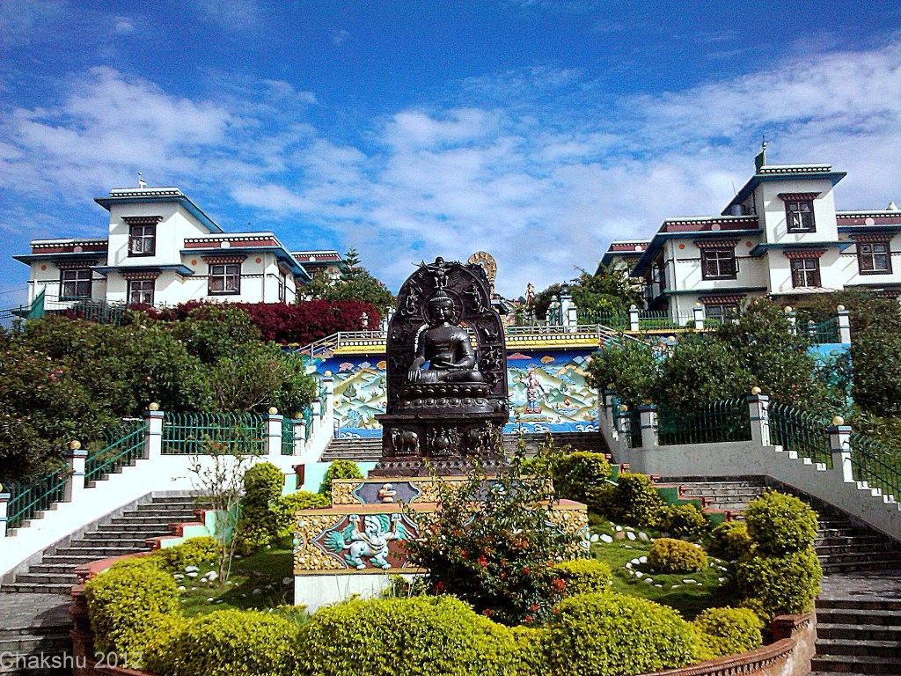
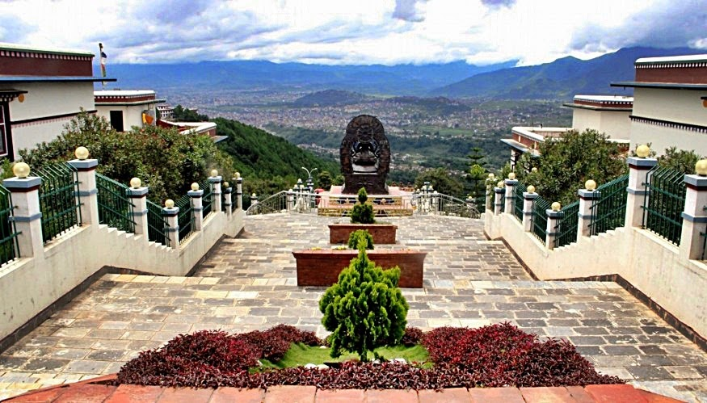
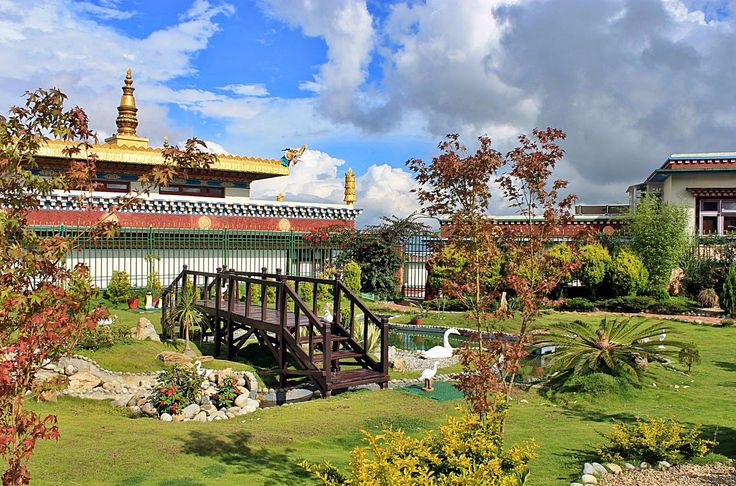

White gumba

White Gumba, also known as Seto Gumba or Druk Amitabh Mountain Monastery, is a prominent heritage site
located in the foothills of the Kathmandu Valley. Situated on a hilltop in the outskirts of Kathmandu, White
Gumba offers a serene and spiritual retreat for visitors.

The monastery is known for its stunning white exterior, which stands out against the lush green
surroundings. The main attraction of White Gumba is the large statue of the Buddha Amitabha, which sits at
the center of the complex. The serene expression on the Buddha's face and the peaceful ambiance of the
monastery create a tranquil environment for meditation and contemplation.
White Gumba is not only a religious site but also a center for Buddhist study and practice. Monks and nuns
reside within the monastery and dedicate themselves to spiritual pursuits. The complex includes prayer
halls, meditation rooms, and libraries, where visitors can engage in quiet reflection or join in Buddhist
teachings and rituals.
The location of White Gumba offers panoramic views of the Kathmandu Valley and the surrounding mountains.
The hilltop vantage point allows visitors to enjoy breathtaking sunsets, capturing the golden hues of the
setting sun against the backdrop of the majestic Himalayas.




Visiting White Gumba provides a unique opportunity to witness the blending of spirituality, culture, and
natural beauty. The serene atmosphere, the stunning architecture, and the panoramic views make it a popular
destination for locals and tourists seeking tranquility and a deeper connection with their inner
selves.Whether one seeks spiritual solace, cultural immersion, or simply a peaceful escape from the city,
White Gumba offers a serene sanctuary where visitors can rejuvenate their mind, body, and spirit.